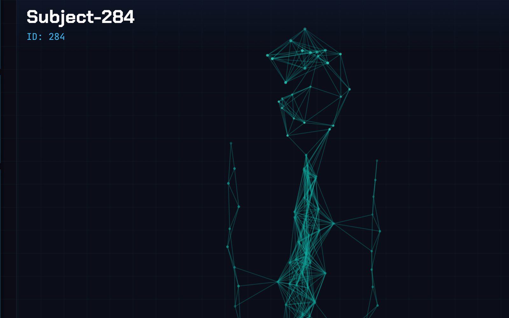

Cleaned a 332,000-row California solar dataset and implemented Minimum Distance Estimation for quantile regression following the asymptotic theory, checked against statsmodels. The expensive tail prices nothing like the median.
screenshot: live gdp dashboard + policy slidersassets/projects/ecosim-dashboard.png · 1600×1000

2025 · python, fastapi, react · team
Eco Sim
An agent-based economy of 100K+ households, firms and a government, with emergent pricing, production and labor, and a live dashboard where you move policy sliders and watch GDP respond.
A statistical pairs engine on WMT/TGT: rolling 60-day OLS hedge ratios so nothing peeks ahead, z-score mean-reversion signals, and modeled transaction costs.